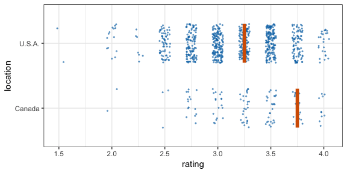
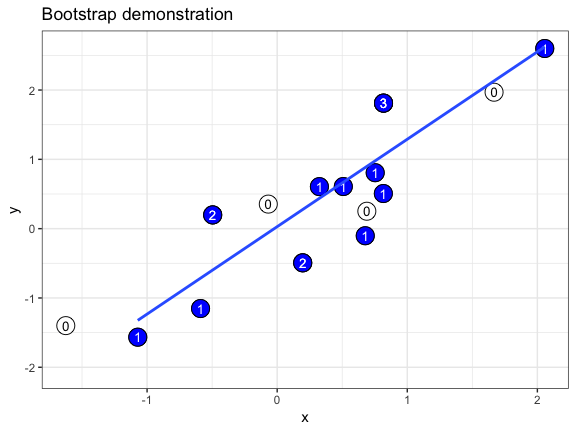

Sampling and bootstrapping
Claus O. Wilke
2019-01-07
Source:vignettes/sampling-bootstrapping.Rmd
sampling-bootstrapping.RmdThe functions sampler() and bootstrapper() generate sampling and bootstrapping objects that are useful in ggplot2 layers. They are meant to sample from data frames and/or bootstrap sample frames.
Sampling from data frames
Both sampler() and bootstrapper() return functions that can be applied to data frames to carry out the sampling or bootstrapping. The benefit of using these generated functions is that we can reproducibly sample or bootstrap multiple times. As an exampe of this concept, assume we want to sample three times two rows each (without replacement) from a data frame that holds one row for each letter in the alphabet.
library(ungeviz)
# sampling object that samples 3 times a sample of size 2
spl <- sampler(times = 3, size = 2)
# input data frame
df <- data.frame(letter = letters, number = 1:26)
head(df)
#> letter number
#> 1 a 1
#> 2 b 2
#> 3 c 3
#> 4 d 4
#> 5 e 5
#> 6 f 6
# resample the data frame
spl(df)
#> # A tibble: 6 x 6
#> # Groups: .draw [3]
#> .draw .id .original_id letter number .row
#> <int> <int> <int> <fct> <int> <int>
#> 1 1 1 17 q 17 1
#> 2 1 2 24 x 24 2
#> 3 2 1 18 r 18 3
#> 4 2 2 3 c 3 4
#> 5 3 1 17 q 17 5
#> 6 3 2 10 j 10 6
# repeated application of the same sampler object produces the same sample
spl(df)
#> # A tibble: 6 x 6
#> # Groups: .draw [3]
#> .draw .id .original_id letter number .row
#> <int> <int> <int> <fct> <int> <int>
#> 1 1 1 17 q 17 1
#> 2 1 2 24 x 24 2
#> 3 2 1 18 r 18 3
#> 4 2 2 3 c 3 4
#> 5 3 1 17 q 17 5
#> 6 3 2 10 j 10 6We see that repeated sampling produces the exact same output. We also see that the sampling adds four data columns, called .draw, .id, .original_id, and .row. These provide information about the sampled rows. .draw identifies the repeated draws, .id identifies individual data row within each repeated draw, .original_id identifies the data row from which a sampled row originates, and .row simply counts all rows in the final data frame. All these additional columns can be useful in conjunction with gganimate.
Sampling without replacement is the default. If we want to sample with replacement, we can set the replace argument to TRUE.
# sampling object that samples once a sample of size 5 with replacement
spl <- sampler(times = 1, size = 5, replace = TRUE)
# input data frame
df <- data.frame(letter = letters[1:4], number = 1:4)
df
#> letter number
#> 1 a 1
#> 2 b 2
#> 3 c 3
#> 4 d 4
# resample the data frame
spl(df)
#> # A tibble: 5 x 6
#> # Groups: .draw [1]
#> .draw .id .original_id letter number .row
#> <int> <int> <int> <fct> <int> <int>
#> 1 1 1 1 a 1 1
#> 2 1 2 3 c 3 2
#> 3 1 3 3 c 3 3
#> 4 1 4 4 d 4 4
#> 5 1 5 4 d 4 5For both sampling and bootstrapping, we can specify groups to sample from or to bootstrap. This can be done either by using the group argument or by applying the sampler or bootstrapper object on a grouped tibble.
library(dplyr)
set.seed(1234)
df <- data.frame(
type = c(rep("A", 100), rep("B", 10), rep("C", 3)),
y = rnorm(113)
)
head(df)
#> type y
#> 1 A -1.2070657
#> 2 A 0.2774292
#> 3 A 1.0844412
#> 4 A -2.3456977
#> 5 A 0.4291247
#> 6 A 0.5060559
# sample without considering any grouping
sampler(2, 2, seed = 123)(df)
#> # A tibble: 4 x 6
#> # Groups: .draw [2]
#> .draw .id .original_id type y .row
#> <int> <int> <int> <fct> <dbl> <int>
#> 1 1 1 33 A -0.709 1
#> 2 1 2 89 A -0.192 2
#> 3 2 1 47 A -1.11 3
#> 4 2 2 99 A 0.973 4
# sample within groups defined by `type` column
sampler(2, 2, group = type, seed = 123)(df)
#> # A tibble: 12 x 7
#> # Groups: .draw_group, .draw [6]
#> .draw .id .original_id type y .draw_group .row
#> <int> <int> <int> <fct> <dbl> <fct> <int>
#> 1 1 1 29 A -0.0151 A 1
#> 2 1 2 79 A 0.258 A 2
#> 3 2 1 41 A 1.45 A 3
#> 4 2 2 88 A -0.403 A 4
#> 5 1 1 110 B -0.0521 B 5
#> 6 1 2 101 B 0.415 B 6
#> 7 2 1 106 B 0.167 B 7
#> 8 2 2 109 B 0.355 B 8
#> 9 1 1 112 C -0.649 C 9
#> 10 1 2 111 C -0.196 C 10
#> 11 2 1 113 C -1.11 C 11
#> 12 2 2 111 C -0.196 C 12
# sample within groups defined by `type` column
group_by(df, type) %>% sampler(2, 2, seed = 123)()
#> # A tibble: 12 x 6
#> # Groups: type, .draw [6]
#> .draw .id .original_id type y .row
#> <int> <int> <int> <fct> <dbl> <int>
#> 1 1 1 29 A -0.0151 1
#> 2 1 2 79 A 0.258 2
#> 3 2 1 41 A 1.45 3
#> 4 2 2 88 A -0.403 4
#> 5 1 1 110 B -0.0521 5
#> 6 1 2 101 B 0.415 6
#> 7 2 1 106 B 0.167 7
#> 8 2 2 109 B 0.355 8
#> 9 1 1 112 C -0.649 9
#> 10 1 2 111 C -0.196 10
#> 11 2 1 113 C -1.11 11
#> 12 2 2 111 C -0.196 12Now let’s make a hypothetical outcome plot (HOP). We will use the cacao dataset, which contains ratings for chocolate bars from manufacturers in many different locations. Let’s make a plot that shows the ratings of randomly drawn pairs of chocolate bars, one from a U.S. manufacturer and one from a Canadian manufacturer. The trick to doing this is to use the appropriate sampler object as the data argument to a layer in ggplot2. This trick makes use of the ggplot2 feature that if data is a function then this function is used to modify the main dataset of the plot for this layer.
library(ggplot2)
library(gganimate)
cacao %>% filter(location %in% c("Canada", "U.S.A.")) %>%
ggplot(aes(rating, location)) +
geom_point(
position = position_jitter(height = 0.3, width = 0.05),
size = 0.4, color = "#0072B2", alpha = 1/2
) +
geom_vpline(data = sampler(25, group = location), height = 0.6, color = "#D55E00") +
theme_bw() +
transition_states(.draw, 1, 3)
By default, gganimate shows the vertical bars sliding from one position to another. If instead we want the bars to disappear and reappear, we need to tell gganimate that it should consider them to be different. We do this by setting the group aesthetic of the vpline layer to .row. Since .row simply counts all rows in the sampled data frame, this group setting guarantees that gganimate thinks of all vertical bars as independent objects.
cacao %>% filter(location %in% c("Canada", "U.S.A.")) %>%
ggplot(aes(rating, location)) +
geom_point(
position = position_jitter(height = 0.3, width = 0.05),
size = 0.4, color = "#0072B2", alpha = 1/2
) +
geom_vpline(
data = sampler(25, group = location),
aes(group = .row), # here is where we set the group aesthetic for vertical bars
height = 0.6, color = "#D55E00"
) +
theme_bw() +
transition_states(.draw, 1, 3) +
enter_fade() + exit_fade() # smoth enter and exit
Bootstrapping data frames
Bootstrapper objects work just like sampler objects. A bootstrapper can be thought of as a special case of a sampler where sampling is done with replacement and the sample size is the group size.
# bootstrapper object that bootstraps 2 times
bsr <- bootstrapper(times = 2)
# input data frame
df <- data.frame(letter = letters[1:4], number = 1:4)
head(df)
#> letter number
#> 1 a 1
#> 2 b 2
#> 3 c 3
#> 4 d 4
# bootstrap the data frame
bsr(df)
#> # A tibble: 8 x 7
#> # Groups: .draw [2]
#> .draw .id .original_id letter number .copies .row
#> <int> <int> <int> <fct> <int> <dbl> <int>
#> 1 1 1 4 d 4 2 1
#> 2 1 2 4 d 4 2 2
#> 3 1 3 1 a 1 2 3
#> 4 1 4 1 a 1 2 4
#> 5 2 1 3 c 3 1 5
#> 6 2 2 2 b 2 1 6
#> 7 2 3 4 d 4 1 7
#> 8 2 4 1 a 1 1 8The columns .draw, .id, .original_id, and .row are the same as generated by a sampler. The column .copies represents the number of times each original id appears in a bootstrapped draw.
The .copies column is useful if we want to make a bootstrap demonstration that shows how often individual data points are oversampled. In this example, we use geom_text() to plot the copy number of each duplicated point. We also take advantage of the fact that a bootstrapper can be used multiple times with identical results, and hand it as the data argument to multiple layers.
set.seed(69527)
# randomly generate dataset
x <- rnorm(15)
df <- data.frame(x, y = x + 0.5*rnorm(15))
# bootstrapper object
bsr <- bootstrapper(10)
ggplot(df, aes(x, y)) +
geom_point(shape = 21, size = 6, fill = "white") +
geom_text(label = "0", hjust = 0.5, vjust = 0.5, size = 10/.pt) +
geom_point(data = bsr, aes(group = .row), shape = 21, size = 6, fill = "blue") +
geom_text(data = bsr, aes(label = .copies, group = .row), hjust = 0.5, vjust = 0.5, size = 10/.pt, color = "white") +
geom_smooth(data = bsr, aes(group = .draw), method = "lm", se = FALSE) +
ggtitle("Bootstrap demonstration") +
theme_bw() +
transition_states(.draw, 1, 2) +
enter_fade() + exit_fade()